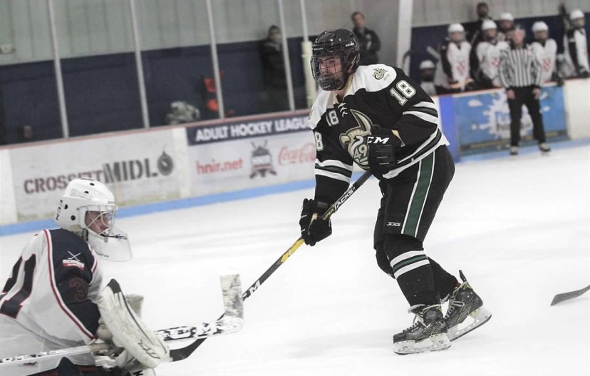

Playing hockey against the university of Richmond
Personal Background:I was born in Raleigh, NC. I'm currently a senior at Charlotte.
Professional Background: I currently work at Redmond's Corner inside Extreme Ice Center in Indian Trail.
Academic Background: Graduated from Heritage High School in 2017. Attened Wake Tech Community College for two years then transfered to Charlotte. I started off my college career as an Engineering Major but switched the Computer Science Fall 2020.
Background in this Subject:I do not really have much background in HTML or anything webbased stuff.
Primary Computer Platform: My primary computer platform is Windows 10 on my desktop and Windows 11 on my laptop.
Courses I'm Taking & Why:
ITSC3181 Introduction to Computer Architecture- Need this class for my degree
ITIS 3200 intro to info security and privacy - Need this for my degree
ITSC 3146 intro oper systems & Networking - Need this for my degree
ITIS 3135 Web App Design and development - Need this for my degree
{kind=link}